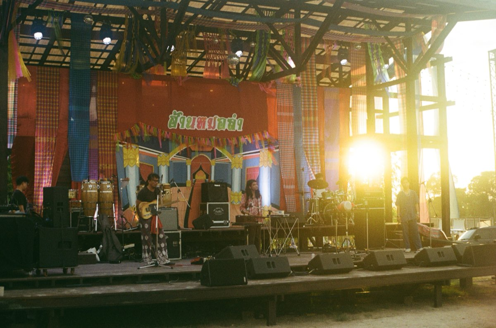

Band assistant & photographer · Wonderfruit
B35
Thai instruments × jazz, shot on my father's film camera.
The band
B35 (Borom35) blends traditional Thai instruments with jazz. It's a new taste, and it gets me every time I watch them live.
Like pairing gaeng tai pla with wine.
They invited me to Wonderfruit two years running, in 2024 and 2025, as their photographer and all-round assistant. I'm going with them again in 2026.
Listen while you scroll
What I did
- Moved the band's instruments and members around the festival site
- Helped the gig run smoothly, from arrival to the evening set
- Shot the band on film, with my father's Yashica FX-3 Super 2000
Roll 1 · Daylight
The band
Swipe the strip · tap to zoom


B35 played as the sun went down


The festival stage · evening set
Roll 2 · After dark
Wonderfruit at night
Other acts on the main stages, after B35's set.


All photos shot on film by Chanon Boonsak · Yashica FX-3 Super 2000
Next project · 05